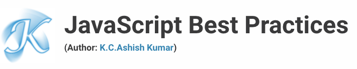
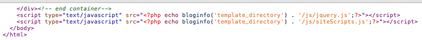

If you need help with JavaScript bug fixes, customization or anything else, be sure to visit ashishkumarkc.com.
1. Use === Instead of ==
JavaScript utilizes two different kinds of equality operators: === | !== and == | != It is considered best practice to always use the former set when comparing.
"If two operands are of the same type and value, then === produces true and !== produces false." - JavaScript: The Good Parts
However, when working with == and !=, you'll run into issues when working with different types. In these cases, they'll try to coerce the values, unsuccessfully.
2. Eval = Bad
For those unfamiliar, the "eval" function gives us access to JavaScript's compiler. Essentially, we can execute a string's result by passing it as a parameter of "eval".
Not only will this decrease your script's performance substantially, but it also poses a huge security risk because it grants far too much power to the passed in text. Avoid it!
3. Don't Use Short-Hand
Technically, you can get away with omitting most curly braces and semi-colons. Most browsers will correctly interpret the following:
1 2 | if(someVariableExists) x = false |
However, consider this:
1 2 3 | if(someVariableExists) x = false anotherFunctionCall(); |
One might think that the code above would be equivalent to:
1 2 3 4 | if(someVariableExists) { x = false; anotherFunctionCall();} |
Unfortunately, he'd be wrong. In reality, it means:
1 2 3 4 | if(someVariableExists) { x = false;}anotherFunctionCall(); |
As you'll notice, the indentation mimics the functionality of the curly brace. Needless to say, this is a terrible practice that should be avoided at all costs. The only time that curly braces should be omitted is with one-liners, and even this is a highly debated topic.
1 | if(2 + 2 === 4) return 'nicely done'; |
Always Consider the Future
What if, at a later date, you need to add more commands to this if statement. In order to do so, you would need to rewrite this block of code. Bottom line - tread with caution when omitting.
4. Utilize JS Lint
JSLint is a debugger written by Douglas Crockford. Simply paste in your script, and it'll quickly scan for any noticeable issues and errors in your code.
"JSLint takes a JavaScript source and scans it. If it finds a problem, it returns a message describing the problem and an approximate location within the source. The problem is not necessarily a syntax error, although it often is. JSLint looks at some style conventions as well as structural problems. It does not prove that your program is correct. It just provides another set of eyes to help spot problems."
- JSLint Documentation
Before signing off on a script, run it through JSLint just to be sure that you haven't made any mindless mistakes.
5. Place Scripts at the Bottom of Your Page
This tip has already been recommended in the previous article in this series. As it's highly appropriate though, I'll paste in the information.

Remember -- the primary goal is to make the page load as quickly as possible for the user. When loading a script, the browser can't continue on until the entire file has been loaded. Thus, the user will have to wait longer before noticing any progress.
If you have JS files whose only purpose is to add functionality -- for example, after a button is clicked -- go ahead and place those files at the bottom, just before the closing body tag. This is absolutely a best practice.
Better
1 2 3 4 5 | <p>And now you know my favorite kinds of corn. </p><script type="text/javascript" src="path/to/file.js"></script><script type="text/javascript" src="path/to/anotherFile.js"></script></body></html> |
6. Declare Variables Outside of the For Statement
When executing lengthy "for" statements, don't make the engine work any harder than it must. For example:
Bad
1 2 3 4 5 | for(var i = 0; i < someArray.length; i++) { var container = document.getElementById('container'); container.innerHtml += 'my number: ' + i; console.log(i);} |
Notice how we must determine the length of the array for each iteration, and how we traverse the dom to find the "container" element each time -- highly inefficient!
Better
1 2 3 4 5 | var container = document.getElementById('container');for(var i = 0, len = someArray.length; i < len; i++) { container.innerHtml += 'my number: ' + i; console.log(i);} |
Bonus points to the person who leaves a comment showing us how we can further improve the code block above.
7. The Fastest Way to Build a String
Don't always reach for your handy-dandy "for" statement when you need to loop through an array or object. Be creative and find the quickest solution for the job at hand.
1 2 | var arr = ['item 1', 'item 2', 'item 3', ...];var list = '<ul><li>' + arr.join('</li><li>') + '</li></ul>'; |
I won’t bore you with benchmarks; you’ll just have to believe me (or test for yourself) - this is by far the fastest method!
Using native methods (like join()), regardless of what’s going on behind the abstraction layer, is usually much faster than any non-native alternative.
- James Padolsey, james.padolsey.com
8. Reduce Globals
"By reducing your global footprint to a single name, you significantly reduce the chance of bad interactions with other applications, widgets, or libraries."
- Douglas Crockford
1 2 3 4 5 6 | var name = 'Jeffrey';var lastName = 'Way';function doSomething() {...}console.log(name); // Jeffrey -- or window.name |
Better
1 2 3 4 5 6 | var DudeNameSpace = { name : 'Jeffrey', lastName : 'Way', doSomething : function() {...}}console.log(DudeNameSpace.name); // Jeffrey |
Notice how we've "reduced our footprint" to just the ridiculously named "DudeNameSpace" object.
9. Comment Your Code
It might seem unnecessary at first, but trust me, you WANT to comment your code as best as possible. What happens when you return to the project months later, only to find that you can't easily remember what your line of thinking was. Or, what if one of your colleagues needs to revise your code? Always, always comment important sections of your code.
1 2 3 4 | // Cycle through array and echo out each name. for(var i = 0, len = array.length; i < len; i++) { console.log(array[i]);} |
10. Embrace Progressive Enhancement
Always compensate for when JavaScript is disabled. It might be tempting to think, "The majority of my viewers have JavaScript enabled, so I won't worry about it." However, this would be a huge mistake.
Have you taken a moment to view your beautiful slider with JavaScript turned off? (Download the Web Developer Toolbar for an easy way to do so.) It might break your site completely. As a rule of thumb, design your site assuming that JavaScript will be disabled. Then, once you've done so, begin to progressively enhance your layout!
11. Don't Pass a String to "SetInterval" or "SetTimeOut"
Consider the following code:
1 2 3 | setInterval("document.getElementById('container').innerHTML += 'My new number: ' + i", 3000); |
Not only is this code inefficient, but it also functions in the same way as the "eval" function would. Never pass a string to SetInterval and SetTimeOut. Instead, pass a function name.
1 | setInterval(someFunction, 3000); |
12. Don't Use the "With" Statement
At first glance, "With" statements seem like a smart idea. The basic concept is that they can be used to provide a shorthand for accessing deeply nested objects. For example...
1 2 3 4 | with (being.person.man.bodyparts) { arms = true; legs = true;} |
-- instead of --
1 2 | being.person.man.bodyparts.arms = true;being.person.man.bodyparts.legs= true; |
Unfortunately, after some testing, it was found that they "behave very badly when setting new members." Instead, you should use var.
1 2 3 | var o = being.person.man.bodyparts;o.arms = true;o.legs = true; |
13. Use {} Instead of New Object()
There are multiple ways to create objects in JavaScript. Perhaps the more traditional method is to use the "new" constructor, like so:
1 2 3 4 5 6 | var o = new Object();o.name = 'Jeffrey';o.lastName = 'Way';o.someFunction = function() { console.log(this.name);} |
However, this method receives the "bad practice" stamp without actually being so. Instead, I recommend that you use the much more robust object literal method.
Better
1 2 3 4 5 6 7 | var o = { name: 'Jeffrey', lastName = 'Way', someFunction : function() { console.log(this.name); }}; |
Note that if you simply want to create an empty object, {} will do the trick.
1 | var o = {}; |
"Objects literals enable us to write code that supports lots of features yet still make it a relatively straightforward for the implementers of our code. No need to invoke constructors directly or maintain the correct order of arguments passed to functions, etc." - dyn-web.com
14. Use [] Instead of New Array()
The same applies for creating a new array.
Okay
1 2 3 | var a = new Array();a[0] = "Joe";a[1] = 'Plumber'; |
Better
1 | var a = ['Joe','Plumber']; |
"A common error in JavaScript programs is to use an object when an array is required or an array when an object is required. The rule is simple: when the property names are small sequential integers, you should use an array. Otherwise, use an object." - Douglas Crockford
15. Long List of Variables? Omit the "Var" Keyword and Use Commas Instead
1 2 3 | var someItem = 'some string';var anotherItem = 'another string';var oneMoreItem = 'one more string'; |
Better
1 2 3 | var someItem = 'some string', anotherItem = 'another string', oneMoreItem = 'one more string'; |
...Should be rather self-explanatory. I doubt there's any real speed improvements here, but it cleans up your code a bit.
17. Always, Always Use Semicolons
Technically, most browsers will allow you to get away with omitting semi-colons.
1 2 3 4 | var someItem = 'some string'function doSomething() { return 'something'} |
Having said that, this is a very bad practice that can potentially lead to much bigger, and harder to find, issues.
Better
1 2 3 4 | var someItem = 'some string';function doSomething() { return 'something';} |
18. "For in" Statements
When looping through items in an object, you might find that you'll also retrieve method functions as well. In order to work around this, always wrap your code in an if statement which filters the information
1 2 3 4 5 | for(key in object) { if(object.hasOwnProperty(key)) { ...then do something... }} |
As referenced from JavaScript: The Good Parts, by Douglas Crockford.
19. Use Firebug's "Timer" Feature to Optimize Your Code
Need a quick and easy way to determine how long an operation takes? Use Firebug's "timer" feature to log the results.
1 2 3 4 5 | function TimeTracker(){ console.time("MyTimer"); for(x=5000; x > 0; x--){} console.timeEnd("MyTimer");} |
20. Read, Read, Read...
While I'm a huge fan of web development blogs (like this one!), there really isn't a substitute for a book when grabbing some lunch, or just before you go to bed. Always keep a web development book on your bedside table. Here are some of my JavaScript favorites.
Read them...multiple times. I still do!
21. Self-Executing Functions
Rather than calling a function, it's quite simple to make a function run automatically when a page loads, or a parent function is called. Simply wrap your function in parenthesis, and then append an additional set, which essentially calls the function.
1 2 3 4 5 6 | (function doSomething() { return { name: 'jeff', lastName: 'way' };})(); |
22. Raw JavaScript Can Always Be Quicker Than Using a Library
JavaScript libraries, such as jQuery and Mootools, can save you an enormous amount of time when coding -- especially with AJAX operations. Having said that, always keep in mind that a library can never be as fast as raw JavaScript (assuming you code correctly).
jQuery's "each" method is great for looping, but using a native "for" statement will always be an ounce quicker.
23. Crockford's JSON.Parse
Although JavaScript 2 should have a built-in JSON parser, as of this writing, we still need to implement our own. Douglas Crockford, the creator of JSON, has already created a parser that you can use. It can be downloaded HERE.
Simply by importing the script, you'll gain access to a new JSON global object, which can then be used to parse your .json file.
1 2 3 4 5 6 | var response = JSON.parse(xhr.responseText);var container = document.getElementById('container');for(var i = 0, len = response.length; i < len; i++) { container.innerHTML += '<li>' + response[i].name + ' : ' + response[i].email + '</li>';} |
24. Remove "Language"
Years ago, it wasn't uncommon to find the "language" attribute within script tags.
1 2 3 | <script type="text/javascript" language="javascript">...</script> |
However, this attribute has long since been deprecated; so leave it out.
That's All, Folks
So there you have it; twenty-four essential tips for beginning JavaScripters. Let me know your quick tips! Thanks for reading.
Follow me on Twitter, or visit my website ashishkumarkc.com for more daily web development news and articles.